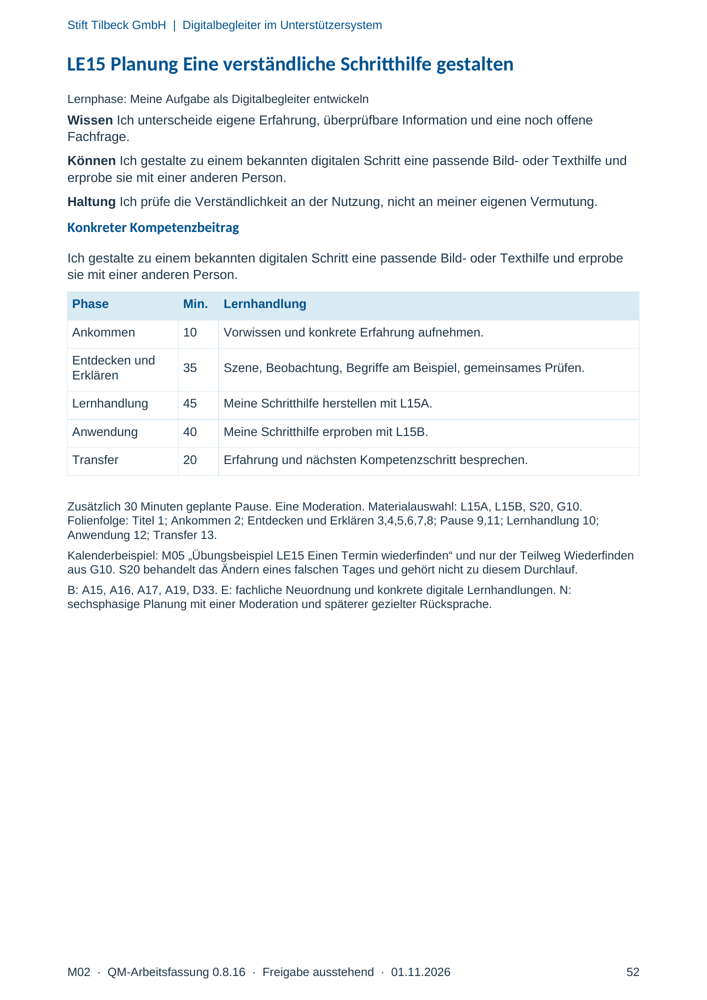
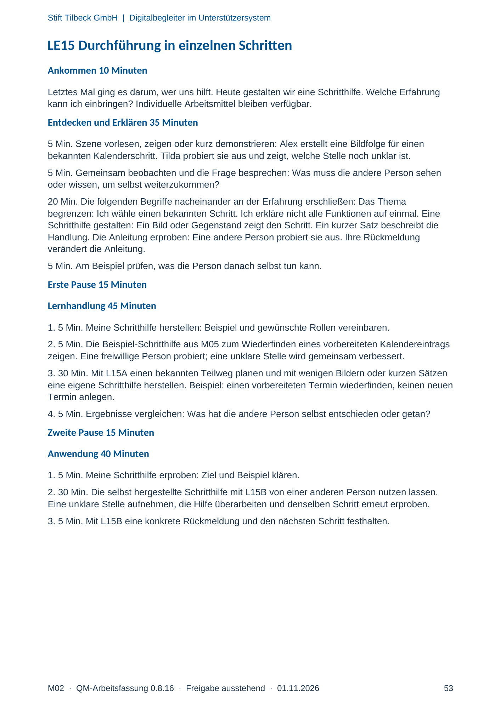
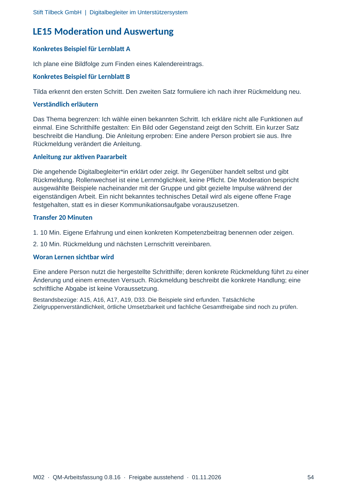

M02 · Originalseite 52, 53, 54
Handbuch und Muster
Gezielte Original-Druckauswahl.
Fragen und Ankreuzfelder werden auf dem Ausdruck bearbeitet. Die Lesefassung speichert keine Antworten.
Lesefassung · Seite 52
Stift Tilbeck GmbH | Digitalbegleiter im Unterstützersystem
M02 · QM-Arbeitsfassung 0.8.16 · Freigabe ausstehend · 01.11.2026 52
LE15 Planung Eine verständliche Schritthilfe gestalten
Lernphase: Meine Aufgabe als Digitalbegleiter entwickeln
Wissen Ich unterscheide eigene Erfahrung, überprüfbare Information und eine noch offene
Fachfrage.
Können Ich gestalte zu einem bekannten digitalen Schritt eine passende Bild- oder Texthilfe und
erprobe sie mit einer anderen Person.
Haltung Ich prüfe die Verständlichkeit an der Nutzung, nicht an meiner eigenen Vermutung.
Konkreter Kompetenzbeitrag
Ich gestalte zu einem bekannten digitalen Schritt eine passende Bild- oder Texthilfe und erprobe
sie mit einer anderen Person.
Phase Min. Lernhandlung
Ankommen 10 Vorwissen und konkrete Erfahrung aufnehmen.
Entdecken und
Erklären 35 Szene, Beobachtung, Begriffe am Beispiel, gemeinsames Prüfen.
Lernhandlung 45 Meine Schritthilfe herstellen mit L15A.
Anwendung 40 Meine Schritthilfe erproben mit L15B.
Transfer 20 Erfahrung und nächsten Kompetenzschritt besprechen.
Zusätzlich 30 Minuten geplante Pause. Eine Moderation. Materialauswahl: L15A, L15B, S20, G10.
Folienfolge: Titel 1; Ankommen 2; Entdecken und Erklären 3,4,5,6,7,8; Pause 9,11; Lernhandlung 10;
Anwendung 12; Transfer 13.
Kalenderbeispiel: M05 „Übungsbeispiel LE15 Einen Termin wiederfinden“ und nur der Teilweg Wiederfinden
aus G10. S20 behandelt das Ändern eines falschen Tages und gehört nicht zu diesem Durchlauf.
B: A15, A16, A17, A19, D33. E: fachliche Neuordnung und konkrete digitale Lernhandlungen. N:
sechsphasige Planung mit einer Moderation und späterer gezielter Rücksprache.
Originalseite ansehen

Lesefassung · Seite 53
Stift Tilbeck GmbH | Digitalbegleiter im Unterstützersystem
M02 · QM-Arbeitsfassung 0.8.16 · Freigabe ausstehend · 01.11.2026 53
LE15 Durchführung in einzelnen Schritten
Ankommen 10 Minuten
Letztes Mal ging es darum, wer uns hilft. Heute gestalten wir eine Schritthilfe. Welche Erfahrung
kann ich einbringen? Individuelle Arbeitsmittel bleiben verfügbar.
Entdecken und Erklären 35 Minuten
5 Min. Szene vorlesen, zeigen oder kurz demonstrieren: Alex erstellt eine Bildfolge für einen
bekannten Kalenderschritt. Tilda probiert sie aus und zeigt, welche Stelle noch unklar ist.
5 Min. Gemeinsam beobachten und die Frage besprechen: Was muss die andere Person sehen
oder wissen, um selbst weiterzukommen?
20 Min. Die folgenden Begriffe nacheinander an der Erfahrung erschließen: Das Thema
begrenzen: Ich wähle einen bekannten Schritt. Ich erkläre nicht alle Funktionen auf einmal. Eine
Schritthilfe gestalten: Ein Bild oder Gegenstand zeigt den Schritt. Ein kurzer Satz beschreibt die
Handlung. Die Anleitung erproben: Eine andere Person probiert sie aus. Ihre Rückmeldung
verändert die Anleitung.
5 Min. Am Beispiel prüfen, was die Person danach selbst tun kann.
Erste Pause 15 Minuten
Lernhandlung 45 Minuten
1. 5 Min. Meine Schritthilfe herstellen: Beispiel und gewünschte Rollen vereinbaren.
2. 5 Min. Die Beispiel-Schritthilfe aus M05 zum Wiederfinden eines vorbereiteten Kalendereintrags
zeigen. Eine freiwillige Person probiert; eine unklare Stelle wird gemeinsam verbessert.
3. 30 Min. Mit L15A einen bekannten Teilweg planen und mit wenigen Bildern oder kurzen Sätzen
eine eigene Schritthilfe herstellen. Beispiel: einen vorbereiteten Termin wiederfinden, keinen neuen
Termin anlegen.
4. 5 Min. Ergebnisse vergleichen: Was hat die andere Person selbst entschieden oder getan?
Zweite Pause 15 Minuten
Anwendung 40 Minuten
1. 5 Min. Meine Schritthilfe erproben: Ziel und Beispiel klären.
2. 30 Min. Die selbst hergestellte Schritthilfe mit L15B von einer anderen Person nutzen lassen.
Eine unklare Stelle aufnehmen, die Hilfe überarbeiten und denselben Schritt erneut erproben.
3. 5 Min. Mit L15B eine konkrete Rückmeldung und den nächsten Schritt festhalten.
Originalseite ansehen

Lesefassung · Seite 54
Stift Tilbeck GmbH | Digitalbegleiter im Unterstützersystem
M02 · QM-Arbeitsfassung 0.8.16 · Freigabe ausstehend · 01.11.2026 54
LE15 Moderation und Auswertung
Konkretes Beispiel für Lernblatt A
Ich plane eine Bildfolge zum Finden eines Kalendereintrags.
Konkretes Beispiel für Lernblatt B
Tilda erkennt den ersten Schritt. Den zweiten Satz formuliere ich nach ihrer Rückmeldung neu.
Verständlich erläutern
Das Thema begrenzen: Ich wähle einen bekannten Schritt. Ich erkläre nicht alle Funktionen auf
einmal. Eine Schritthilfe gestalten: Ein Bild oder Gegenstand zeigt den Schritt. Ein kurzer Satz
beschreibt die Handlung. Die Anleitung erproben: Eine andere Person probiert sie aus. Ihre
Rückmeldung verändert die Anleitung.
Anleitung zur aktiven Paararbeit
Die angehende Digitalbegleiter*in erklärt oder zeigt. Ihr Gegenüber handelt selbst und gibt
Rückmeldung. Rollenwechsel ist eine Lernmöglichkeit, keine Pflicht. Die Moderation bespricht
ausgewählte Beispiele nacheinander mit der Gruppe und gibt gezielte Impulse während der
eigenständigen Arbeit. Ein nicht bekanntes technisches Detail wird als eigene offene Frage
festgehalten, statt es in dieser Kommunikationsaufgabe vorauszusetzen.
Transfer 20 Minuten
1. 10 Min. Eigene Erfahrung und einen konkreten Kompetenzbeitrag benennen oder zeigen.
2. 10 Min. Rückmeldung und nächsten Lernschritt vereinbaren.
Woran Lernen sichtbar wird
Eine andere Person nutzt die hergestellte Schritthilfe; deren konkrete Rückmeldung führt zu einer
Änderung und einem erneuten Versuch. Rückmeldung beschreibt die konkrete Handlung; eine
schriftliche Abgabe ist keine Voraussetzung.
Bestandsbezüge: A15, A16, A17, A19, D33. Die Beispiele sind erfunden. Tatsächliche
Zielgruppenverständlichkeit, örtliche Umsetzbarkeit und fachliche Gesamtfreigabe sind noch zu prüfen.
Originalseite ansehen
